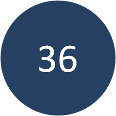
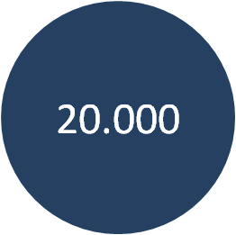
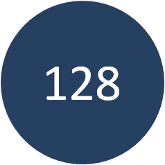

Il Centro Medico di San Patrignano, ubicato nelle sede riminese della comunità, è nato nel 1994 dalla necessità di affiancare alla conoscenza medica e scientifica l’affetto, il sostegno e la solidarietà propri di una dimensione familiare. E’ infatti dimostrato che numerose patologie – in particolare l’infezione da Hiv – sono influenzate positivamente da un approccio empatico e dalla solidarietà delle persone che circondano il malato.
San Patrignano | Costruire un futuro oltre la tossicodipendenza
Fondazione Deutsche Italia è al fianco di San Patrignano nella lotta contro la tossicodipendenza. Dal 2010, sosteniamo la realizzazione di un'asta di beneficienza annuale per raccogliere fondi a favore della comunità.
San patrignano
2018 │ Milano
Fondazione Deustche Bank Italia è da tempo impegnata nella lotta alla droga in Italia supportando la Comunità di San Patrignano, il più importante centro di recupero della tossicodipendenza in Europa, che da oltre trent’anni accoglie i giovani con problemi di droga e ne cura il reinserimento in società. Sono molti gli adulti e i ragazzi, talvolta anche minorenni, che una volta entrati nel tunnel della droga fanno fatica ad uscirne. La comunità di San Patrignano rappresenta in molti casi un percorso riabilitativo e di reinserimento alternativo al carcere.
Fra le diverse attività per la raccolta fondi che la comunità realizza, ogni anno viene organizzata un’asta di beneficienza a Milano, tra novembre e dicembre. Una serata di gala in cui i protagonisti sono proprio i giovani di San Patrignano.
Tanti sono stati i risultati raggiunti in questi anni insieme grazie all’asta, aiutando i ragazzi in diversi aspetti della loro vita quotidiana: da progetti legati allo sport, ad attività educative fino a iniziative per ampliare le strutture sanitarie e di accoglienza.
Scopri la gallery

Il nuovo campo da calico I nuovi posti letto del progetto
attrezzato con tribune e "Prendiamoci Cura"
illuminazione
San Patrignano
La Comunità di San Patrignano è il più importante centro antidroga di tutta Europa ed ospita oltre 1.300 ragazzi. Dal 1978 ad oggi, San Patrignano ha accolto in forma totalmente gratuita, senza oneri né per le famiglie né per lo Stato, oltre 25.000 persone provenienti da centinaia di diverse nazioni, offrendo loro una casa, l’assistenza sanitaria e legale, la possibilità di studiare, di imparare un lavoro e reinserirsi pienamente nella società al termine del percorso di recupero. Secondo una ricerca effettuata dall’Università di Bologna, che ha monitorato un gruppo di ex ospiti della comunità a cinque anni dal loro reintegro nella società, il 72% dei ragazzi che terminano positivamente il percorso non ricadono nel problema della tossicodipendenza. Scopri di più
 
Più di 20 mila ragazzi Nuovi posti letto nell'ambito
aiutati da San Patrignano di "Una casa per tutti"
Dicono di noi
"Siamo grati a Deutsche per il sostegno che da anni offre a San Patrignano. La nostra Comunità non chiede contribute economici allo Stato né tanto meno alle famiglie dei ragazzi che giorno dopo giorno accogliamo e accompagniamo in un percorso di crescita, non solo per superare la tossicodipendenza ma soprattutto per riappropriarsi delle loro vite. La sensibilità di Deutsche ci aiuta in questo impegno, rendendo possibile la realizzazione di numerosi progetti legati all'annuale asta di beneficenza a favore della Comunità".
Antonio TinelliCoordinatore del Comitato sociale di San Patrignano
Scopri la storia di Dario
Dario studia Scienze infermieristiche a Rimini. Secondo anno di università ed una grande volontà di aiutare gli altri, dopo che qualcuno si era letteralmente caricato sulle spalle il peso della sua vita. Era il 2008 infatti quando Dario arrivò a San Patrignano. Un lungo passato di tossicodipendenza, a recitare la parte di musicista maledetto. Kurt Cobain era il suo mito, la chitarra la sua passione tanto che a soli 17 anni diede vita alla sua prima rock band. Ma è difficile essere rock senza le canne e così scopre la corsia preferenziale per tutte le altre droghe.
Arrivare all’eroina per lui è un lampo. Una sostanza che calma la sua irrequietezza e gli fa sembrare tutto più tranquillo. Qualche anno più tardi la prima overdose, i soccorsi e lui che riacciuffa la vita per i capelli. In quei giorni di lucidità capisce che cosa è diventato e la paura lo spinge ad assumere ancora più sostanze. Il giorno del 28esimo compleanno la resa e la richiesta di aiuto. La scelta di entrare in Comunità a San Patrignano. E lui si affida.
Inserito fra i ragazzi che si occupano del canile, inizia a vivere in maniera lucida le giornate, a scoprirsi, ad accettare i suoi difetti. Tutto questo confrontandosi con i compagni della comunità e condividendo con loro i momenti di gioia e di fatica. Fin quando il suo responsabile non lo pone di fronte alla domanda “che cosa vuoi fare da grande?”. Una delle attività che più lo appagava in comunità era fare assistenza ai malati al centro medico.
Da qui la scelta di affrontare l’università. Fra poco più di un anno discuterà la tesi.
Prendiamoci cura
Studiare per Crescere
Percorsi scolastici della durata di tre-quattro anni che danno l’opportunità di ottenere un diploma o una qualifica professionale che consenta ai ragazzi, una volta completato con successo il programma in comunità, un positivo reinserimento nella vita lavorativa e sociale, tornando così a vivere normalmente dopo il percorso di recupero.
Una casa per tutti
Realizzazione di nuove strutture abitative per l’accoglienza di giovani in difficoltà. Riqualificando una struttura già esistente, è stato possibile ampliare la comunità di 128 posti letto aggiuntivi, divisi su 16 moduli abitativi. In questo modo, la comunità avrà i mezzi per aiutare un numero sempre maggiore di persone, limitando i tempi delle nuove accoglienze: affinchè nessuno debba ritardare l’inizio delle propria nuova vita.
Un Calcio Contro la Droga
Costruzione di un campo da calcio in erba sintetica e delle relative strutture accessorie. Un'importante iniziativa per avvicinare i ragazzi di San Patrignano allo sport, mezzo privilegiato e insostituibile nel percorso di recupero dalla droga.